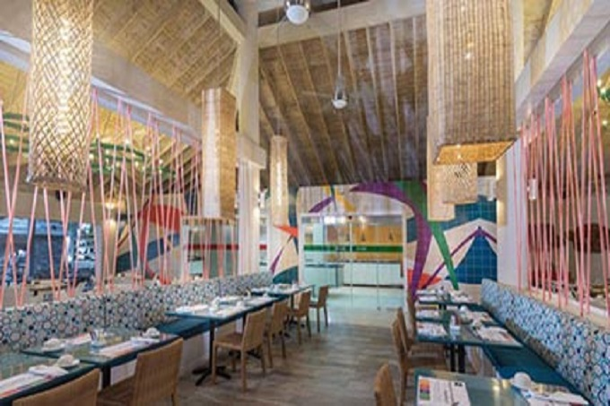
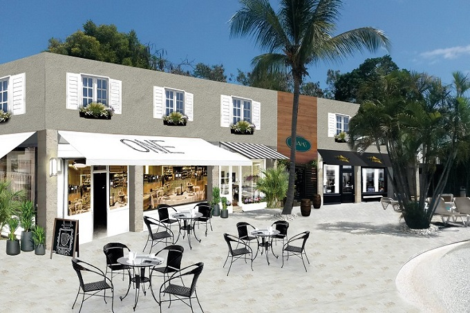
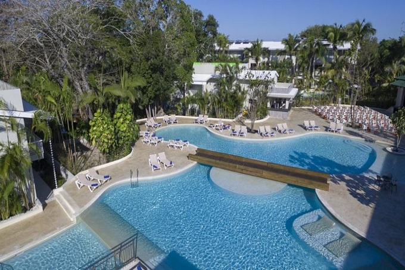
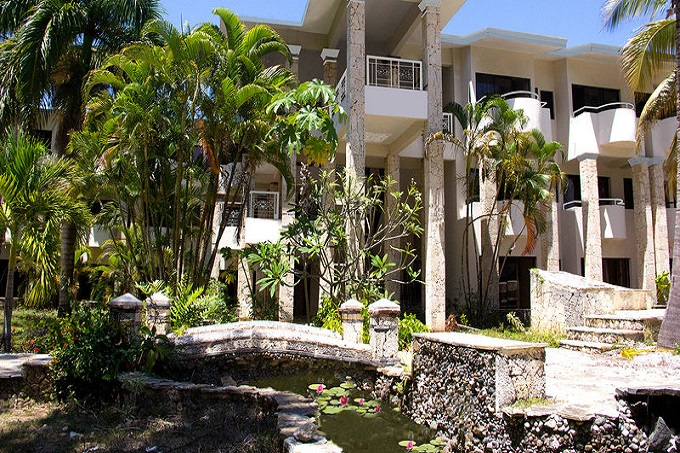

|  |
Emotions By Hodelpa está ubicado en primera línea de la Playa Villas del Mar
en la hermosa localidad de Juan Dolio, una de las áreas más privilegiadas y tranquilas de la costa Sureste de la República
Dominicana a solo 40 minutos de la ciudad de Santo Domingo y a 20 minutos del Aeropuerto Internacional Las Américas.
Con una atmósfera elegante, cálida hospitalidad y excelente servicio personalizado en medio de hermosas instalaciones.
Exquisitas suites especialmente decoradas con cama king size, lencería egipcia, baño privado, pantuflas, almohadas de
plumas y antialérgicas. Con TV con cable y puerto USB, radio, plancha y tabla de planchar, amenidades para el cuidado personal, secador de pelo,
mini bar, caja de seguridad, teléfono, maquina de té y café.
|
 |
|  |
El hotel Emotions By Hodelpa cuenta con 260 habitaciones delicadamente decoradas y
equipadas con balcón, vista al mar, piscina o jardín, aire acondicionado, teléfono, refrigerador, plancha y tabla de planchar, secador de pelo,
reloj despertador, baño privado con ducha y amenidades del cuidado personal.
Vive la magia de las puestas de sol más impresionantes en la hermosa Playa de Juan Dolio para complementar unas inolvidables
vacaciones. Complace tus sentidos con la exquisita gastronomía del Emotions By Hodelpa.
Mágicos momento en medio de una vista impresionante del Mar Caribe, playas de arena blanca, exuberante vegetación tropical, gazebo a la
orilla del mar e inolvidables atardeceres.
|
 |